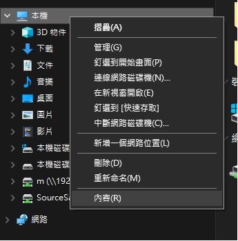
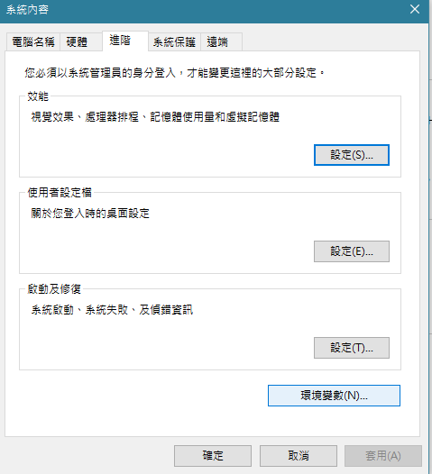
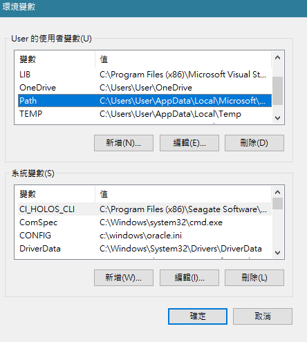
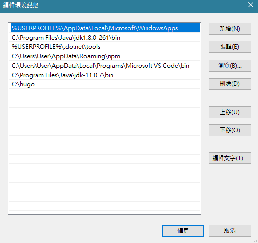
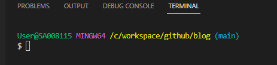
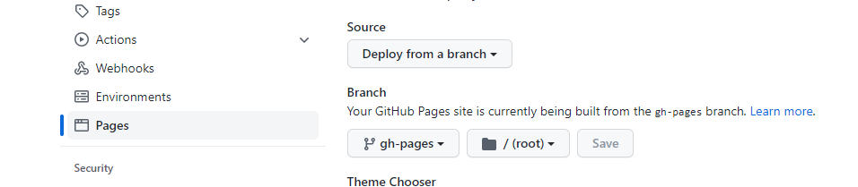
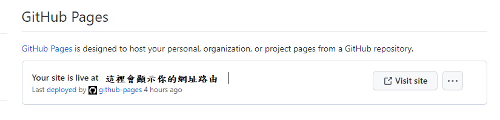

簡介：
-
官網：HUGO
- 主題也可以從官網上面查找自己想要得主題
官網上的經典名句：The world’s fastest framework for building websites 這意思其實是指生產靜態資源的速度。
讓我們看看，可參考以下 Build Time 比較表 生產靜態資源的速度 出處
| Generator | 10 | 100 | 1,000 | 10,000 |
|---|---|---|---|---|
| Hugo | 0.05s | 0.08s | 0.34s | 2.95s |
| Jekyll | 1.47s | 3.3s | 14.38s | 187.15s |
HUGO 環境安裝(手動配置)
Hugo 安裝檔下載地點
- 點選電腦系統版本
- 找不到則往下一版找
Window 安裝
步驟
- 1.先在 C槽 新增一個 Hugo 的資料夾，並且把下載下來的壓縮檔壓縮到此目錄
- 2.查看 壓縮完的檔案裏面 是否有一個 (hugo.exe) 檔案，有的話接下來進行環境路徑配置
- 3.點擊我的電腦 右鍵 選擇 (內容) 進去之後點擊 (進階系統設定)

- 4.點選 (環境變數)，然後選擇 Path 之後 點擊 (編輯)
- 5.之後 點擊 (新增) 將 hugo 路徑加入 然後都按 (確定) 設置便完成   
Mac 安裝
尚未撰寫
教學
大神-Blog
這邊創建專案的方式參考某位大神寫好的腳本，創建好的同時並且上傳到 github 上面之外，還在此專案上面分成兩個分支，一個是 main(負責放原本的專案位置)，一個是 gh-pages(存放Bulid過後的靜態資源)
1. 設置腳本bash檔案
先在你想要存放的位置打開一個空白的txt檔案，然後把腳本放進去之後，副檔名修改成 .sh 的副檔名，記得要先在 github 先建立好 res 專案 以及腳本要進行設置，需設置的部分下面註釋有說。
腳本如下：
#!/bin/bash
gitUser="" # 這邊設置 github 帳號
gitRepo="" # 這邊設置 respon 專案的 名字
hugo new site ${gitRepo}
cd ${gitRepo}/
git init
git clone https://github.com/gurusabarish/hugo-profile.git themes/profile #這邊設置 需要使用到的主題的 github
rm -rf themes/profile/.git
cp -r themes/profile/exampleSite/* ./
#sed -i "1,1s=http://localhost:1313/=https://${gitUser}.github.io/${gitRepo}/=g" config.toml
echo "public" >> .gitignore
echo "#!/bin/bash" >> run-commit-gh-pages.sh
echo "rm -rf public/" >> run-commit-gh-pages.sh
echo "hugo" >> run-commit-gh-pages.sh
echo "cd public && git add --all && git commit -m \"Publishing to gh-pages\" && cd .." >> run-commit-gh-pages.sh
echo "#!/bin/bash" >> run-push-gh-pages.sh
echo "git push origin gh-pages" >> run-push-gh-pages.sh
chmod a+x run-commit-gh-pages.sh
chmod a+x run-push-gh-pages.sh
#if [ "`git status -s`" ]
#then
# echo "The working directory is dirty. Please commit any pending changes."
# exit 1;
#fi
#
#echo "Deleting old publication"
#rm -rf public
#mkdir public
#git worktree prune
#rm -rf .git/worktrees/public/
#
#echo "Checking out gh-pages branch into public"
#git worktree add -B gh-pages public origin/gh-pages
#
#echo "Removing existing files"
#rm -rf public/*
#
#echo "Generating site"
#hugo
#
#echo "Updating gh-pages branch"
#cd public && git add --all && git commit -m "Publishing to gh-pages (publish.sh)"
#
##echo "Pushing to github"
#git push --all
FILE="run_publish.sh"
cat > $FILE <<- EOF
if [ "\`git status -s\`" ]
then
echo "The working directory is dirty. Please commit any pending changes."
exit 1;
fi
echo "Deleting old publication"
rm -rf public
mkdir public
git worktree prune
rm -rf .git/worktrees/public/
echo "Checking out gh-pages branch into public"
git worktree add -B gh-pages public origin/gh-pages
echo "Removing existing files"
rm -rf public/*
echo "Generating site"
hugo
echo "Updating gh-pages branch"
cd public && git add --all && git commit -m "Publishing to gh-pages (run_publish.sh)"
#echo "Pushing to github"
git push --all
EOF
chmod a+x ${FILE}
git add .
git commit -m "first commit"
git branch -M main
git remote add origin https://github.com/username/respon.git # 這邊設置 respon專案 的 clone 網址
git checkout --orphan gh-pages
git reset --hard
git commit --allow-empty -m "Initializing gh-pages branch"
git push origin gh-pages
git checkout main
./${FILE}
2. 執行腳本
這邊需要會一點終端指令，打開 vs code 打開 TERMINAL 在右手邊 點選 + 新增一個 git bash，然後 cd 到 放置腳本的位置之後，輸入指令
bash ./腳本名稱.sh
執行完之後，會在腳本同個位置產生出跟 github res 專案名稱一樣的專案資料夾，就可以針對自己設置好的主題進行修改了。
3. 專案資料夾修改後要如何重新發佈
新建完的專案進行新增文章後或者修改樣式後，要進行重新發佈，一樣需要利用腳本，但是新建的專案裡面 有增加三個副檔名為 .sh 的檔案，但是基本上我們只會運用到其中一個叫做 run_publish.sh，這個腳本，另外兩個可以刪除，避免搞混。
一樣也是 開啟 TERMINAL 的 git-bash的介面 cd 到此專案，要先確認 git-分支 是 main 如圖

確定好之後依序輸入 git 指令，這兩個去收尋 git 使用方式 就會理解，這邊不再額外敘述
git add .
git commit -m "save"
git status
都輸入完之後，確認 git status 輸入完之後是否為空的就可以執行腳本，等他執行完就發佈成功
bash ./run_publish.sh
4. github 當靜態資源站點 設置
到 github 切換到 你的res 專案裡面 點擊 Settings 再點擊 pages，會發現有一個 Branch 的設置

前面有提到新建專案並且同時發佈時，github 這邊會有兩個分支，一個負責儲存 原始專案，一個是負責放置 打包過後要發佈顯示的靜態資源，而 gh-pages 就是要負責當顯示的分支，切換成這個分支之後按儲存，這樣就可以從 https://username.github.io/res專案名稱 看到你的部落格了!!!! 